Voice shortcuts
Map a phrase you say to exact reusable text. No rewriting model, no cloud call, and no ambiguity about the result.
Hold a key, speak, release. Presspeech pastes text at the cursor in about 100 ms with no account, no subscription, and no cloud transcription. Apple Silicon, macOS 14+.
The current Presspeech identity migrates saved preferences and local dictionary rules from earlier builds. macOS privacy permissions require one fresh grant.
brew install --cask rcourtman/presspeech/presspeech

Map a phrase you say to exact reusable text. No rewriting model, no cloud call, and no ambiguity about the result.
Opt in to deterministic commands including “new paragraph”, “bullet point”, “comma”, “open quote”, and more.
Finish setup in a focused private scratchpad, test the hotkey immediately, then take the same workflow into any Mac app.
Presspeech is a menu-bar utility, not a document manager. The default trigger is Right Option, with other hotkeys available from the menu.
Audio is captured in memory, transcribed locally, pasted, then discarded. Transcripts are not written to disk.
Swift, AVFoundation, CoreGraphics, AppKit, CoreML, and FluidAudio. No embedded browser runtime, interpreter, account, subscription, or cloud transcription endpoint.
Fast phrase-length dictation into whatever app already has focus; a local-only privacy model; a tiny notarised app; and a workflow that does not keep a transcript library.
Intel Mac support, macOS before 14 Sonoma, batch file transcription, speaker labels, long-form transcript editing, cloud models, team features, or integrations with notes databases.